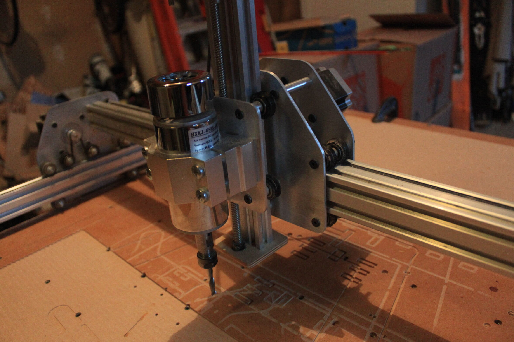
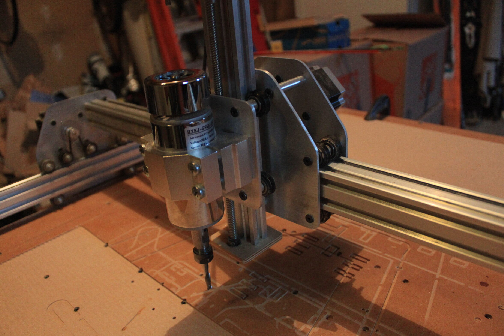

Front view of the router. The MDF wasteboard is 1m x 1m, leaving about 900mm x 900mm of work area.
Close up of the Z-Axis. The spindle is a cheap DC motor that should be upgraded.
Looking along the X-Axis. The v-wheels are visible as well as the belts to drive the X and Y axes.
About this project
I became interested in automated manufacturing, especially CNC machines, during my Junior and Senior years of high school. I was getting somewhat into woodworking, having built a few longboards and an electric guitar body. The prospect of having a machine do all this tedious shaping for me was too good to be true! Basing some of my design decisions off of the original Shapeoko 2 CNC router, I made some drawings of the CNC machine and began building.
The first version of this machine had all plywood plates, which were eventually upgraded to 1/8" aluminum. The original electronics consisted of an Arduino Uno, cheap stepper drivers, and the spindle driver. The Arduino setup was eventually upgraded to the more capable tinyG Controller.